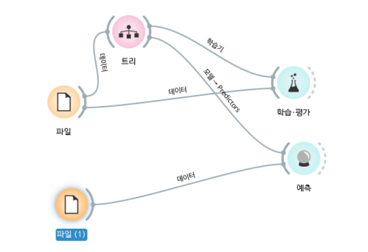
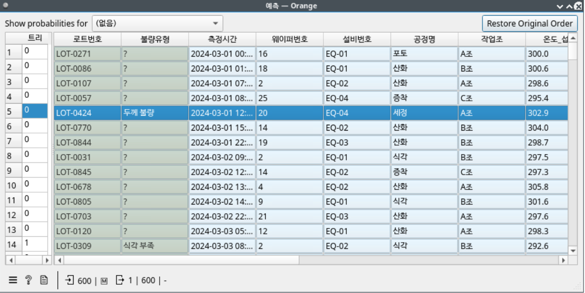

(735, 9)와
588 147이 나오면 성공. (노트북 1단계)오늘의 질문: "내가 만든 모델은 처음 보는 새로운 데이터에서도 믿을 만할까?"
predict()로 새 로트 9건의 합격/불합격을 예측하고, 새 데이터의 열이 학습 때와 같아야 하는 이유를 말할 수 있다.predict_proba()로 "얼마나 확신하는지"를 확인하고, Orange3 결과와 다를 수 있는 이유를 말할 수 있다.| 시험 보는 학생 | 오늘의 모델 | 채점할 수 있나? |
|---|---|---|
| 연습문제를 풀며 공부 | 연습문제(train) 588건으로 학습(fit) | - |
| 모의고사 | 모의고사(test) 147건을 맞혀 보기 | 있다. 정답지(합격여부)가 있다 |
| 실제 시험 | 새 로트 9건 예측(predict) | 아직 없다. 실제 검사가 끝나야 안다 |
합격여부를 정답(Label)으로 삼아
결정 트리 모델을 학습시켰다. 결정 트리는 "온도가 294도보다 높은가?" 같은 질문을 이어 가며 답을 좁히는 스무고개 모델이다.train_test_split).random_state=42를
같게 두면 언제 실행해도 똑같이 나뉘고 똑같은 모델이 만들어진다.| 열 이름 | 공장에서 뜻하는 것 |
|---|---|
온도_섭씨 | 작업하는 방(챔버) 안의 온도 |
압력_Pa | 챔버 압력. 교육용 가상 값이라 크기 자체는 해석하지 않는다 |
가스유량_slm | 챔버에 흘려 넣는 가스의 양 |
두께_nm | 작업 뒤 웨이퍼 위에 남은 얇은 막의 두께(nm는 10억분의 1미터) |
진공도_mTorr | 챔버 안 공기를 얼마나 뺐는지를 아주 작은 압력 단위로 잰 값. 공기를 많이 뺄수록 숫자가 작다 |
습도_pct | 클린룸 공기의 습도(%) |
합격여부(정답) | 최종 검사 결과. 1 = 합격, -1 = 불합격 |
합격여부는 1~8차시와 같다. 1 = 합격, -1 = 불합격-1이라고 답하면 "불합격 예상"이다.predict_proba)의 열 순서는 따로 확인해야 한다(STEP 04).9차시 코드를 한 번에 모았다. 새로 배우는 내용은 없다. 실행 결과의 숫자 두 줄이 9차시와 같으면 된다.
import pandas as pd
from sklearn.model_selection import train_test_split
from sklearn.tree import DecisionTreeClassifier
df = pd.read_csv("../../data/weekly/week09/week09_pass_fail_train.csv", encoding="utf-8-sig").dropna()
print(df.shape)
feature_cols = ["온도_섭씨", "압력_Pa", "가스유량_slm", "두께_nm", "진공도_mTorr", "습도_pct"]
X = df[feature_cols] # 단서(Feature) 6개
y = df["합격여부"] # 정답(Label): 1 = 합격, -1 = 불합격
X_train, X_test, y_train, y_test = train_test_split(
X, y, test_size=0.2, random_state=42, stratify=y
)
print(len(X_train), len(X_test))
model = DecisionTreeClassifier(max_depth=4, random_state=42)
model.fit(X_train, y_train)(735, 9) 588 147 DecisionTreeClassifier(max_depth=4, random_state=42)
(735, 9) — 빈칸이 있는 행 15개를 지우고(dropna(), 5차시) 735행이 남았다.588 147 — 연습문제(train) 588건, 모의고사(test) 147건으로 나뉘었다.model.predict(X_test)), 정답과 비교해 점수를 낸다.from sklearn.metrics import accuracy_score
pred = model.predict(X_test)
accuracy = accuracy_score(y_test, pred)
print(f"모델 정확도: {accuracy:.1%}")모델 정확도: 80.3%
80.3%면 괜찮은 점수일까? 판단하려면 비교할 기준이 있어야 한다.
모의고사 147건에 합격·불합격이 몇 개인지 세고, "전부 합격"이라고 찍었을 때의 정확도를 구한다. 이 찍기 점수를 기준선(baseline)이라고 한다. 모델은 적어도 찍기보다는 나아야 한다.
print(y_test.value_counts())
baseline = (y_test == 1).mean()
print(f"기준선(무조건 합격이라고 찍기) 정확도: {baseline:.1%}")합격여부 1 116 -1 31 Name: count, dtype: int64 기준선(무조건 합격이라고 찍기) 정확도: 78.9%
y_test == 1은 "정답이 1(합격)인가?"를 한 줄씩 True/False로 묻는다. 그 평균(.mean())은 True의 비율, 곧 합격 비율이다.1은 합격이다(1 = 합격, -1 = 불합격). y_test == -1이라고 쓰면 오류 없이
"전부 불합격이라고 찍기"의 점수(21.1%)가 나온다.
정확도는 "몇 개 맞혔나" 한 숫자뿐이다. 혼동행렬은 맞힘과 틀림을 네 칸으로 나눠 보여준다.
from sklearn.metrics import confusion_matrix
cm = confusion_matrix(y_test, pred, labels=[1, -1])
print(cm)labels=[1, -1]은 표의 순서를 "합격(1), 불합격(-1)" 순으로 정하라는 뜻이다(9차시와 같은 배치).
그래서 윗줄 = 실제 합격, 아랫줄 = 실제 불합격, 왼쪽 칸 = 합격 예측, 오른쪽 칸 = 불합격 예측이다.
[[109 7] [ 22 9]]
| 모델: 합격(1)이라 함 | 모델: 불합격(-1)이라 함 | 합계 | |
|---|---|---|---|
| 실제 합격(1) | 109 — 맞힘 | 7 — 멀쩡한 로트를 불합격이라 함 | 116 |
| 실제 불합격(-1) | 22 — 불합격을 놓침 | 9 — 불합격을 잡음 | 31 |
머신러닝을 처음 배우는 사람이야. 불합격이 드문 데이터에서 '정확도가 높은데도 쓸모없는 모델'이 생기는 이유를 화재경보기 비유로 설명해줘. 혼동행렬의 네 칸이 화재경보기에서는 각각 어떤 상황인지도 알려줘.이렇게 확인해보자: "불이 났는데 울리지 않음"이 오늘 혼동행렬의 22건(불합격을 놓침)과 같은 칸인지 짚어보자.
합격여부가 없다.predict)이다.new_lots = pd.read_csv("../../data/weekly/week09/week09_new_lots_to_predict.csv", encoding="utf-8-sig")
print(new_lots.shape)
print(new_lots)(9, 8) 공정명 설비번호 온도_섭씨 압력_Pa 가스유량_slm 두께_nm 진공도_mTorr 습도_pct 0 식각 EQ-02 294.5 1005.1 50.04 96.46 4.02 44.4 1 산화 EQ-02 301.5 1007.2 55.68 100.65 5.38 46.8 2 식각 EQ-04 289.8 1009.2 50.69 96.19 5.14 42.0 3 포토 EQ-04 295.6 1019.5 49.10 98.97 4.96 44.6 4 식각 EQ-04 299.1 1026.4 56.25 103.10 4.86 38.8 5 포토 EQ-03 302.0 1026.1 51.59 103.76 4.81 50.9 6 산화 EQ-01 305.2 1005.6 47.16 101.69 4.35 42.7 7 산화 EQ-03 299.1 989.2 54.12 98.41 5.09 49.3 8 세정 EQ-01 300.6 1031.7 49.89 102.78 4.54 41.2
학습 데이터는 9열이었는데 새 로트는 8열이다. 빠진 하나가 정답 열 합격여부다.
X_new = new_lots[feature_cols]
print(X_new.shape)(9, 6)
feature_cols 리스트를 그대로 다시 쓴다. 새로 타이핑하면 오타나 순서 실수가 생긴다.model.predict(new_lots)처럼 표를 통째로 넣으면 학습 때 없던 공정명·설비번호가
섞여 ValueError: The feature names should match those that were passed during fit. 오류가 나고,
그 아래에 Feature names unseen at fit time: - 공정명 - 설비번호(학습 때 못 본 열)가 표시된다.new_lots["예측_합격여부"] = model.predict(X_new)
print(new_lots[["공정명", "설비번호", "온도_섭씨", "진공도_mTorr", "예측_합격여부"]])공정명 설비번호 온도_섭씨 진공도_mTorr 예측_합격여부 0 식각 EQ-02 294.5 4.02 1 1 산화 EQ-02 301.5 5.38 1 2 식각 EQ-04 289.8 5.14 -1 3 포토 EQ-04 295.6 4.96 1 4 식각 EQ-04 299.1 4.86 1 5 포토 EQ-03 302.0 4.81 1 6 산화 EQ-01 305.2 4.35 1 7 산화 EQ-03 299.1 5.09 1 8 세정 EQ-01 300.6 4.54 1
1(합격 예상), 2번 로트만 -1(불합격 예상)이다. 2번은 온도가 289.8도로 9건 중 가장 낮다.predict_proba()는 로트마다 확률 두 숫자를 돌려준다. 두 숫자를 더하면 1이다.model.classes_에 적힌 순서를 따른다. 그래서 확률을 보기 전에 classes_부터 출력한다.
오늘은 [-1 1]이 나온다. 숫자가 작은 -1이 앞에 오기 때문이다.proba = model.predict_proba(X_new)
print(model.classes_)
print(proba.round(3))[-1 1] [[0.375 0.625] [0.076 0.924] [0.614 0.386] [0.076 0.924] [0.076 0.924] [0.076 0.924] [0.375 0.625] [0.076 0.924] [0.076 0.924]]
classes_ | 확률 표의 열 | 뜻 |
|---|---|---|
-1 (첫째) | 왼쪽 = 0번 열 | 불합격(-1)일 확률 |
1 (둘째) | 오른쪽 = 1번 열 | 합격(1)일 확률 |
왼쪽(0번) 열, 곧 불합격(-1)일 확률만 꺼내 새 열로 붙인다. proba[:, 0]은 "모든 행(:)의 0번 열"이라는 뜻이다.
읽는 법만 알면 된다. 1번 열을 꺼내면 오류 없이 합격 확률이 붙으니 주의한다.
new_lots["불합격_확률"] = proba[:, 0].round(3) # classes_ [-1 1]의 0번 열 = 불합격(-1)
print(new_lots[["공정명", "설비번호", "온도_섭씨", "진공도_mTorr", "예측_합격여부", "불합격_확률"]])공정명 설비번호 온도_섭씨 진공도_mTorr 예측_합격여부 불합격_확률 0 식각 EQ-02 294.5 4.02 1 0.375 1 산화 EQ-02 301.5 5.38 1 0.076 2 식각 EQ-04 289.8 5.14 -1 0.614 3 포토 EQ-04 295.6 4.96 1 0.076 4 식각 EQ-04 299.1 4.86 1 0.076 5 포토 EQ-03 302.0 4.81 1 0.076 6 산화 EQ-01 305.2 4.35 1 0.375 7 산화 EQ-03 299.1 5.09 1 0.076 8 세정 EQ-01 300.6 4.54 1 0.076
위 실행 결과의 불합격_확률을 그대로 막대로 옮긴 그림. 50%를 넘은 2번만 불합격(-1)으로 예측됐고,
합격(1)으로 예측된 8건 사이에도 높이 차이가 있다.
결정 트리는 새 로트를 "비슷한 과거 로트 묶음"에 넣고, 그 묶음의 불합격 비율을 확률로 말한다. 아래 묶음별 숫자는 강사가 트리를 열어 연습문제(train) 588건으로 확인한 값이다.
| 새 로트 | 들어간 묶음(트리의 갈래) | 묶음 안 연습문제 로트 | 불합격 확률 |
|---|---|---|---|
| 2번 | 온도 약 294도 이하 + 압력 1009.0 초과 + 가스유량 53.94 이하 | 44건 중 27건 불합격 | 61.4% → -1 예측 |
| 0번, 6번 | 온도 약 294~306도 + 진공도 약 4.42 이하 | 24건 중 9건 불합격 | 37.5% |
| 1·3·4·5·7·8번 | 온도 약 294~306도 + 진공도 약 4.43~5.5 | 382건 중 29건 불합격 | 7.6% |
진공도_mTorr가 4.02, 4.35로 9건 중 가장 낮다는 것이다. 온도는 294.5도와 305.2도로 서로 다르다.9차시에는 Orange3로 먼저 모델을 만들어 보고 코드로 확인했다. 오늘은 반대로, 코드로 예측한 같은 새 로트를 Orange3의 예측(Predictions) 위젯에 넣어 다시 확인한다.
합격여부가 categorical / target인지 다시 확인한다.week09_new_lots_to_predict.csv를 연다(화면에는 "파일 (1)"로 보인다).실제 Orange3 화면


같은 데이터를 줘도 두 도구의 예측이나 확률이 다를 수 있다. 같은 문제집을 공부한 두 학생이 답을 다르게 쓰는 것과 같다. 공부한 범위와 방법이 조금씩 달랐기 때문이다.
| 다른 점 | scikit-learn 코드 | Orange3 |
|---|---|---|
| 공부한 문제 수 | 연습문제(train) 588건만으로 학습 | 파일에 들어 있는 전체 행으로 학습 |
| 보는 단서 | 숫자 열 6개 | 공정명·설비번호 같은 글자 열도 단서로 쓸 수 있다 |
| 나무 키우는 규칙 | 깊이 4까지(max_depth=4) | 위젯의 기본 설정(깊이 제한 등이 다르다) |
| 빈칸 처리 | dropna()로 빈칸 있는 행을 지움 | 빈칸 있는 행도 Orange3 방식으로 다룬다 |
10차시 동안 한 일을 한 줄로 줄이면 아래 네 칸이다. 1~3차시의 파이썬 기초는 이 네 칸을 하기 위한 도구였다.
이 과정의 뼈대. 새 데이터를 만나도 이 순서로 다가가면 된다.
| 차시 | 한 문장 정리 | 큰 줄기 |
|---|---|---|
| 1 | 공장은 작업마다 기록을 남기고, 우리는 그 숫자를 변수에 담아 문장으로 말하기 시작했다. 공정명과 함께 보며 "원인 후보"라는 말을 처음 만났다. | 도구 · ② 맛보기 |
| 2 | 여러 측정값은 리스트에, 이름표가 붙은 값은 딕셔너리에 담았다. | 도구 |
| 3 | if·for·함수로 합격/불합격 판정을 컴퓨터에 맡겼다. | 도구 |
| 4 | Pandas로 CSV 표를 읽고, 원하는 행만 조건으로 골라냈다. | 도구 · ① |
| 5 | 분석 전에 빈칸·중복·이상한 값부터 찾아 정리했다. 지저분한 데이터로는 결론도 흔들린다. | ① |
| 6 | 그래프로 그려 숫자 표에서는 안 보이던 모양과 차이를 봤다. | ① |
| 7 | 설비별로 묶어 비교하며(groupby) 수율·불량률의 차이를 숫자로 확인했다. | ② |
| 8 | 두 열이 함께 움직이는지(상관관계) 보고 원인 후보를 골랐다. 함께 움직인다고 원인인 것은 아니다. | ③ |
| 9 | 여러 열을 단서로 합격/불합격을 맞히는 모델을 만들고 정확도를 쟀다. | ④ |
| 10 | 모델 점수를 기준선과 비교해 읽고, 처음 보는 새 로트를 예측했다. | ④ |
데이터 분석 입문 과정을 마쳤어. '예측을 잘한다'와 '원인을 안다'가 왜 다른지, 일상 예시 두 개로 설명해줘. 그리고 이 차이를 확인하는 OX 문제 3개를 내주고, 내가 답하면 해설해줘.이렇게 확인해보자: AI의 해설이 데이터에서 찾은 관계를 "원인"이라고 단정하지 않고 "원인 후보"로 다루는지 보자.
학생용 노트북 week10_student.ipynb를 열고 위에서 아래로 차례대로 진행한다.
____(밑줄 네 개)로 비어 있는 곳만 채우면 된다.
(735, 9)와
588 147이 나오면 성공. (노트북 1단계)predict()로 예측한다. (노트북 3~4단계)predict_proba()로 불합격 확률을 붙이고 가장 높은 로트를 찾는다.
먼저 끝난 사람은 5단계 끝 "도전 문제"로 넘어간다. (노트북 5단계)[[109 7] [22 9]](labels=[1, -1]) — 실제 불합격 31건 중 9건만 잡고 22건을 놓쳤다.model.predict(X_new) → 새 로트 9건 중 2번만 -1(불합격 예상), 나머지 8건은 1(합격 예상).classes_가 [-1 1]이라 0번 열이 불합격 확률이다.data/weekly/week09/week09_pass_fail_train.csv — 750행 9열, 빈칸 있는 행을 지우면 735행
(합격 1이 582건, 불합격 -1이 153건).data/weekly/week09/week09_new_lots_to_predict.csv — 새 로트 9행 8열, 정답 열 합격여부 없음.압력_Pa는 단위와 값의 크기가 실제 공정과 맞지 않는 가상 값이라, 크기 자체를 해석하지 않고 숫자 열 하나로만 쓴다.data/weekly/week10/week10_mini_project_dataset.csv, 600행)에 있다. 수업 본 흐름에서는 쓰지 않는다.ValueError: The feature names should match those that were passed during fit.
(아래에 Feature names unseen at fit time: - 공정명 - 설비번호)model.predict(new_lots)처럼 학습 때 없던 열이 섞인 표를 넣었다.X_new = new_lots[feature_cols]로 학습 때와 같은 단서 열만 골라 넣는다.ValueError 아래에 Feature names must be in the same order as they were in fit.,
열이 빠지면 Feature names seen at fit time, yet now missing:가 나온다.feature_cols를 그대로 쓴다.KeyError: '합격여부'new_lots["합격여부"] 열이 없다.y_test)로만 한다.NameError: name 'model' is not definedNameError: name 'model2' is not defined가 나면 model2를 만드는 도전 문제 첫 셀을 건너뛴 것이다.AttributeError: 'DecisionTreeClassifier' object has no attribute '____'NameError: name '____' is not defined / 비교 기호 자리: SyntaxError: invalid syntaxfit 빈칸을 비워 두면 그 아래 셀에서
NotFittedError: This DecisionTreeClassifier instance is not fitted yet.(아직 학습하지 않은 모델)가 난다.KeyError: '불합격_확률'이 난다. 그 열을 만드는 셀을 먼저 실행한다.y_test == -1을 쓰면 오류 없이 엉뚱한 값(21.1%)이 나온다.classes_가 [-1 1]이므로 불합격 확률은 proba[:, 0]이다. proba[:, 1]을 쓰면 오류 없이 합격 확률이 붙는다.random_state=42를 바꾸거나 빼면 오류 없이 강의와 다른 숫자가 나온다.model2(max_depth=8)를 같은 연습문제(train) 데이터로 학습시킨다.model2.predict(X_new)로 다시 예측해 model의 결과와 비교한다..score(X, y)는 정확도를 한 번에 계산해 주는 명령이다. 연습문제(train) 데이터 점수와 test 점수를 두 모델 모두 구해 비교한다.model2 = DecisionTreeClassifier(max_depth=8, random_state=42)
model2.fit(X_train, y_train)
print(model2.predict(X_new))
print(f"깊이 4 — 학습 데이터 정확도 {model.score(X_train, y_train):.1%}, test 정확도 {model.score(X_test, y_test):.1%}")
print(f"깊이 8 — 학습 데이터 정확도 {model2.score(X_train, y_train):.1%}, test 정확도 {model2.score(X_test, y_test):.1%}")DecisionTreeClassifier(max_depth=8, random_state=42) [-1 1 1 1 1 1 1 1 1] 깊이 4 — 학습 데이터 정확도 84.7%, test 정확도 80.3% 깊이 8 — 학습 데이터 정확도 94.2%, test 정확도 78.9%
더 많은 문제는 실습지에 있다.
[[109 7] [22 9]](labels=[1, -1], 줄은 실제·칸은 예측)에서 "실제 불합격인데 합격이라고 놓친" 로트 수는?print(model.classes_)의 결과가 [-1 1]일 때, proba[:, 1]은 불합격일 확률이다.classes_ 순서를 따르므로 0번 열이 -1(불합격), 1번 열이 1(합격)일 확률이다.
불합격 확률은 proba[:, 0]이다. 합격여부는 1~8차시와 같이 1 = 합격, -1 = 불합격이다.ValueError, C는 KeyError가 나고,
D는 새 로트가 아니라 모의고사 데이터다.def risk_level(p):
if p >= 0.5:
return "높음"
elif p >= 0.3:
return "보통"
else:
return "낮음"
for p in new_lots["불합격_확률"]:
print(f"불합격 확률 {p:.1%} → 위험도 {risk_level(p)}")불합격 확률 37.5% → 위험도 보통 불합격 확률 7.6% → 위험도 낮음 불합격 확률 61.4% → 위험도 높음 불합격 확률 7.6% → 위험도 낮음 불합격 확률 7.6% → 위험도 낮음 불합격 확률 7.6% → 위험도 낮음 불합격 확률 37.5% → 위험도 보통 불합격 확률 7.6% → 위험도 낮음 불합격 확률 7.6% → 위험도 낮음
def, if/elif/else, for는 3차시에 배운 문법이다. 한 줄씩 읽어 보자.:.1%는 0.614를 61.4%처럼 백분율로 보여주는 서식이다.4차시에서 배운 조건 검색을 불합격_확률 열에 다시 써 보자.
risky_lots = new_lots[new_lots["불합격_확률"] > 0.5]
print(f"위험 로트(불합격 확률 50% 초과) 개수: {len(risky_lots)}개")
실행 결과: 위험 로트(불합격 확률 50% 초과) 개수: 1개predict()가 -1(불합격)로 예측한 로트와 같다.
predict()는 불합격 확률이 50%를 넘으면 -1을 고르기 때문이다.
기준을 0.3으로 낮추면 어떻게 될까? 아래는 완성된 코드다(노트북 9단계 "기준을 0.3으로 낮춰 보기").
watch_lots = new_lots[new_lots["불합격_확률"] >= 0.3]
print(f"주의 로트(불합격 확률 30% 이상) 개수: {len(watch_lots)}개")
print(watch_lots[["공정명", "설비번호", "진공도_mTorr", "불합격_확률"]])주의 로트(불합격 확률 30% 이상) 개수: 3개 공정명 설비번호 진공도_mTorr 불합격_확률 0 식각 EQ-02 4.02 0.375 2 식각 EQ-04 5.14 0.614 6 산화 EQ-01 4.35 0.375
같은 데이터라도 기준을 어디에 두느냐에 따라 "위험 로트"의 수가 1개에서 3개로 달라진다. 기준을 낮추면 놓치는 로트는 줄지만, 멀쩡한 로트까지 다시 확인하게 될 수 있다.
name = "지민" # 실제로는 input("이름을 입력하세요: ")
print("*" * 40)
print(" 반도체 데이터 분석 10차시 과정 수료증")
print(f" 이름: {name}")
print(" 데이터를 살피고, 함께 보고, 예측까지 해 보았습니다.")
print("*" * 40)**************************************** 반도체 데이터 분석 10차시 과정 수료증 이름: 지민 데이터를 살피고, 함께 보고, 예측까지 해 보았습니다. ****************************************
"*" * 40은 별표를 40번 이어 붙인 문자열이다. 숫자나 기호를 바꿔 테두리를 꾸며 보자.Jupyter Notebook 한 개에 작성하고, 결과가 화면에 출력된 상태로 제출한다.
feature_cols에서 열 하나를 빼거나 max_depth를 바꿔 다시 학습시키고, test 정확도와 기준선(78.9%)을 비교한다.
새 로트 예측이 달라지는지도 확인한다. 열을 바꿨다면 X_new도 같은 feature_cols로 다시 만들어야 한다.
print(pass_count) 한 줄로 시작했다. 오늘은 데이터를 읽고, 살피고, 함께 보고, 모델을 만들어
처음 보는 로트까지 예측했다.